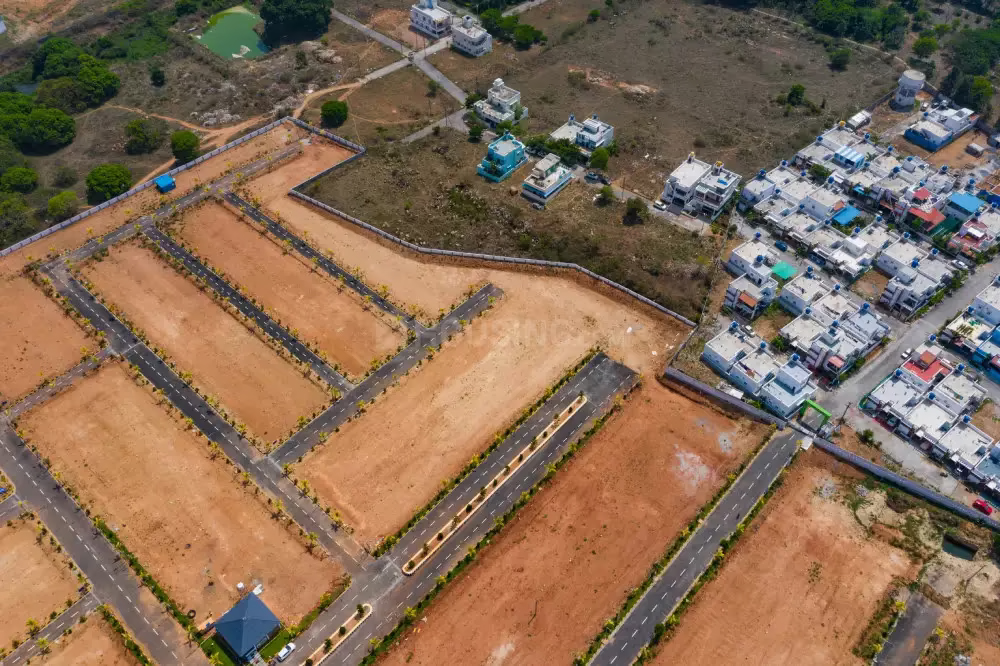
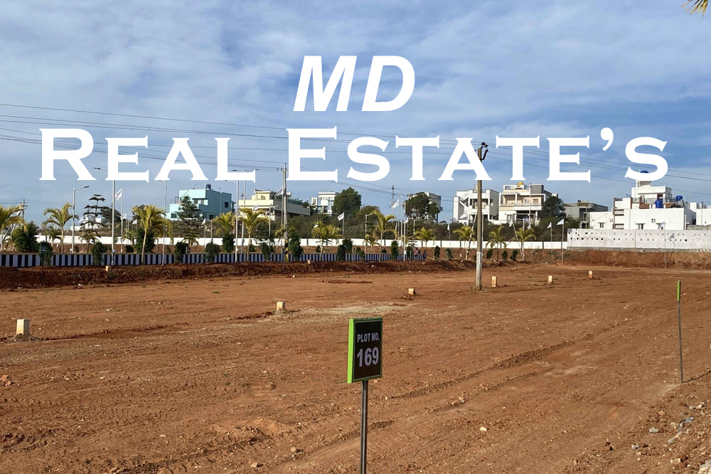
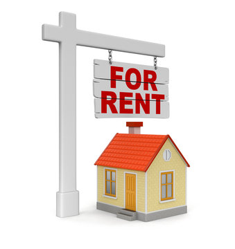

Empty Lands
This type of real estate can vary significantly in size, location, and potential uses, making it a diverse and flexible investment option. Here are some key points to consider when dealing with empty land real estate:
Types of Empty Land:
1.Residential Land: Suitable for building homes, apartments, or condos.
2.Commercial Land: Zoned for businesses, offices, retail, or industrial purposes.
3.Agricultural Land: Primarily used for farming or ranching.
4.Recreational Land: Often located in rural areas, suitable for outdoor activities like hunting, camping, or hiking.
5.Undeveloped Land: Land that has no specific zoning or intended use.
Ground Type lands
"Ground type lands" is not a standard term used in real estate. It's possible that you're referring to a specific type of land or property, but without more context or clarification, it's challenging to provide specific information. If you could provide more details or context about what you mean by "ground type lands," I'd be happy to offer information or insights related to that specific concept. Otherwise, if you're interested in a particular type of land or real estate, please specify the type, location, or any other relevant details so that I can provide more accurate information.
Buying and Selling House
Steps for Buying a House:
Preparation: Determine your budget, get pre-approved for a mortgage (if needed), and identify your desired location and property criteria.
Property Search: Look for suitable properties based on your preferences and budget. Attend open houses, viewings, and work with a real estate agent to find potential homes.
Negotiation: Once you've found a property you like, make an offer to the seller. Negotiate the price, terms, and contingencies (such as inspection and financing contingencies)
House and lands for Rental
1. Property Selection:
Choose a property that is in a desirable location and suits the preferences and needs of
potential tenants. The size, layout, and condition of the house, as well as
the usability of the land, should align with the rental market's demand..
2. Legal and Regulatory Compliance:
Ensure that you comply with all local, state, and federal laws and regulations related to renting out property. This includes understanding tenant rights, fair housing laws, and rental property licensing requirements.
3. Setting the Rent:
Research the local rental market to determine an appropriate monthly rent for your property. Factors such as location, property condition, and amenities can influence the rent amount.
4. Tenant Screening:
Screen prospective tenants thoroughly to minimize the risk of problematic renters. Conduct background checks, assess creditworthiness, and check references to ensure responsible tenants.